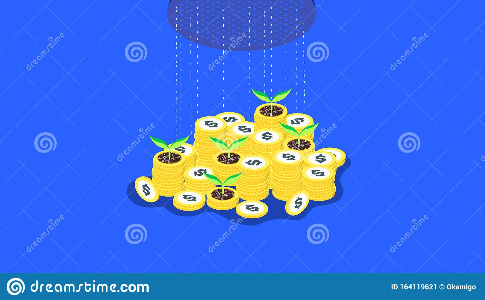

America’s financial war strategy
- UK Strategy for Financial Wellbeing | The Money and ...
Introduction A financing strategy is integral to an organisation’s strategic plan. It sets out how the organisation plans to finance its overall operations to meet its objectives now and in the future. A financing strategy summarises targets, and the actions to be taken over a three to five year period to achieve the targets. It also clearly states key policies which will guide those actions. - This investment strategy seeks financial return and ...
With an effective financial strategy, you can improve your bottom line by several thousand dollars each year. Through financial strategy, you can meet day-to-day expenses, budget for big-ticket purchases and invest money to generate additional wealth. You will outline your financial goals before coordinating a strategy. - America’s financial war strategy - Goldmoney
Strategy extract This Strategy aims to improve financial capability across the UK. That means improving people’s ability to manage money well, both day to day and through significant life events, and their ability to handle periods of financial difficulty. - H.R.1756 - Money Laundering and Financial Crimes Strategy ...
Setting goals for your money is the first step in designing a sound financial plan. Whether you hope to save and invest enough to retire early or simply need to build up an emergency fund, the right financial strategy can strengthen your efforts in reaching those goals.If you need some direction on which tactics work best, here are 10 ways to improve your odds of achieving financial success. - Top 10 Tips for Financial Success - Make Money Personal
A budget is the financial strategy for your business. Guide to writing a business plan (DOC 144.5 KB) Benefits of setting a financial strategy. As you put together your financial strategy, you'll develop a plan of action for your goals and objectives, which will guide you and your business activities towards improved business performance. - The Importance of Financial Strategy | Bizfluent
Easy 4 Step Financial Strategy To Reach Your Money Goals. Now that you have your list of financial goals, you’ll need a strategy in order to achieve them. This 4-step financial strategy will guide you through the best ways to achieve your goals. 1) Define Your Financial Goals Using SMART. - What Is a Financial Strategy? | Sapling
The UK Strategy is the ten-year framework which will help achieve the vision of everyone making the most of their money and pensions. MaPS will play a key role in achieving this vision, by supporting and working with a wide range of other organisations and by delivering services where appropriate. - 8 Financial Tips for Young Adults - Investopedia
To help you get started, we'll take a look at eight of the most important things to understand about money.These financial tips for young adults are designed to help you live your best financial life. - 10 Financial Strategies to Reach Your Money Goals - SmartAsset
A financial strategy is an important aspect of any business. Financial strategies should be discussed and shared with company shareholders, executives and employees, so everyone is on the same page financially. Many companies hire a certified public accountant (CPA) or other finance executive to help create and ... - Developing a financing strategy | Humentum
The U.S. repeats this cycle to make money: printing money, exporting money overseas, and bringing money back. The U.S. has thus become a financial empire. In other words, America’s wealth is sustained by a pump-and-dump operation facilitated by the dollar’s reserve status, replacing genuine industrial production.

Support Sign In The Goldmoney Holding Overview Safety & Transparency Goldmoney vs. ETF & Coins Pension Plan Dealing Rates & Storage Fees Precious Metals Guide for New Clients Gold Bullion Silver Bullion Platinum Bullion Palladium Bullion Research Goldmoney Insights® Market Updates Live Prices & Charts Goldmoney Media Goldmoney Library Authors Encyclopedia More Support Real-Time Audit Careers Investor Relations News Referral Program Client Agreement Privacy Policy Disclaimer The Goldmoney Holding Overview Safety & Transparency Goldmoney vs. ETF & Coins Pension Plan Dealing Rates & Storage Fees Precious Metals Guide for New Clients Gold Bullion Silver Bullion Platinum Bullion Palladium Bullion Research Goldmoney Insights® Market Updates Live Prices & Charts Goldmoney Media Goldmoney Library Authors Encyclopedia More Support Real-Time Audit Careers Investor Relations News Referral Program Client Agreement Privacy Policy Disclaimer Sign In
America’s financial war strategy
By Alasdair Macleod Alasdair Macleod April 20, 2017Abstract
America’s renewed desire to escalate military tensions is a front for America’s continual financial war, this time directed at North Korea, Syria and possibly Iran. This is likely to be the opinion of China’s strategic advisors. We analyse the geopolitics and economics behind America’s war strategy from China’s perspective, concluding that it is entering its final phase. China’s exit plan appears to be to tie the pricing of energy and then other major commodities to gold, returning to the pre-1971 status quo, when the dollar was just a settlement link between commodity prices and gold. Except this time, the dollar itself will be side-lined, so far as China is concerned, which will use the yuan instead for its empire, which will be far larger than that of the US in time, measured by GDP.
Introduction
The day President Trump assumed office, it appeared that at last there would be détente with Russia, leading to America’s withdrawal from unwinnable conflicts and towards a new peaceful agreement between these long-term enemies. However, within the traditional presidential bedding-down period of one hundred days, Trump has gone from his electoral platform of disengagement from foreign ventures to overt aggression in multiple locations.
Something major has changed his thinking. Trump has committed no less than five acts of foreign aggression in that short time, with a sixth pending. The first was a joint operation with Emirati commandos in Yemen, which backfired, leading to the death of a Navy SEAL. The second was the recent attack on a Syrian airfield, in response to an alleged poison gas attack. The third is the escalation of military threats against North Korea. The fourth is the bombing of a cave network in Eastern Afghanistan. And the fifth is the deployment of more troops to Northern Iraq and Eastern Syria to step up the fight against ISIS. The rhetoric is also being ramped up against America’s long-term bogeyman, Iran.
The three theatres of war that offer the best prospects for further escalation are Syria, Korea, and Iran. They are in two regions where significant quantities of dollars are owned and invested, offering the potential for capital flight, which should be kept in mind, when reading this article.
Trump is also seeking congressional approval for an increase in defence spending totalling $54bn, a massive increase which, to put it in perspective, compares with Russia’s total defence budget of $66bn.
The default assumption is that American military power and weapons technology guarantees battlefield objectives will be achieved. This hasn’t usually been the case since the first Iraq invasion in 1990. Since then, any initial success has been more than outweighed by subsequent failures and unintended consequences. It is because of American-led operations in Iraq, Afghanistan, Libya and Syria that Europe is flooded with refugees, bringing undercover terrorists with them. There can be little doubt that a dispassionate analyst would recommend America abandons military action, so there must be other reasons behind America’s war-mongering.
China, itself a long-time strategic target for American aggression, is sure to be worried about the escalation of threats to North Korea, and with good reason. In terms of trade, South Korea is now an important trading partner, and for that reason, China will not want to see the situation on the Korean peninsula deteriorate. She will also not want America securing territory which abuts her border. Russia has a small border with North Korea as well and is likely to share that view. However, Russia’s trade is not so much with South Korea, but she is a major arms supplier to the North.
The only leader with good access to North Korea’s president, Kim Jong-un, is Russia’s President Putin. When Trump was first elected, negotiations with North Korea were a realistic option, and there was even talk of Trump meeting Kim Jong-un to negotiate. The route to negotiations was always through Putin, and if that is not actually closed, it is made much more difficult, because of America’s action launching missiles against Russia’s interests in Syria.
While the renewal of hostilities in Korea threatens to resume (they never officially ended in 1953), China and Russia are sure to avoid escalating the situation. President Xi will have made his own assessment of President Trump to this end, which was probably the most important reason for the meeting at Mar-a-Lago, from Xi’s point of view. The rather casual way in which Xi is reported to have been told about the missile strike against Syria over chocolate cake looks like a businessman’s power-play to impress an opponent. It was not an action of statesmanship. Xi is likely to have thought it amateurish, even a sign of weakness, and might have given Putin a debrief of the meeting including this view.
The relationship between Russia and China is strong, and they are likely to coordinate their strategic responses to American aggression in both Korea and Syria. The question is, if America continues to escalate its bellicose actions against North Korea, Syria, and possibly Iran, what will their response be? For clues, we should look at this from China’s point of view. The People’s Liberation Army’s most influential strategist, Major-General Qiao Liang laid out his overall strategic philosophy at a book-study forum of the Communist Party’s Central Committee in Autumn 2015. His view can be taken to be that of the Chinese leadership. i
China’s working assumptions
Qiao’s economic analysis and conclusions are both interesting and important, but it should be read for what is not said, as much as what is said. His paper will have been examined and cleared by China’s leadership, before being made publicly available. To that extent, there is likely to be an element of disinformation involved as well. It will also have been intended to be studied by foreign governments, alerting them to America’s true motives.
With these cautions in mind, we can proceed. Qiao’s principal thesis is that America uses the dollar to manage external trade and finance for its domestic benefit. Many of us are familiar with the proposition that by exporting dollars and dollar-denominated bank credit, America creates wealth for both the US government and the major American banks, and that the dollar’s reserve status is accordingly vital to the US economy. But Qiao takes this much further, claiming that since the dollar’s peg to the gold price was abandoned, America has initiated a cycle of economic boom and bust among foreign users of the dollar for its own benefit. As Qiao puts it:
The U.S. avoided high inflation by letting the dollar circulate globally. It also needs to restrain the printing of dollars to avoid a dollar devaluation. Then what should it do when it runs out of dollars?
The Americans came up with a solution: issuing debt to bring the dollar back to the U.S. The Americans started to play a game of printing money with one hand and borrowing money with the other hand. Printing money can make money. Borrowing money can also make money. This financial economy (using money to make money) is much easier than the real (industry-based) economy. Why will it bother with manufacturing industries that have only low value-adding capabilities?
Since August 15, 1971, the U.S. has gradually stopped its real economy and moved into a virtual economy. It has become an “empty” economy state. Today’s U.S. Gross Domestic Product (GDP) has reached US$18 trillion, but only $5 trillion is from the real economy.
By issuing debt, the U.S. brings a large amount of dollars from overseas back to the U.S.’s three big markets: the commodity market, the Treasury Bills market, and the stock market. The U.S. repeats this cycle to make money: printing money, exporting money overseas, and bringing money back. The U.S. has thus become a financial empire.
In other words, America’s wealth is sustained by a pump-and-dump operation facilitated by the dollar’s reserve status, replacing genuine industrial production. It is worth clarifying one point: foreign owned dollars never leave the US, only their function. It is more correct to state that the US Government causes dollars to be diverted from foreign trade and investment in manufacturing, to be invested in Treasuries. It can do this by increasing the risks of other uses compared with owning US Treasuries, which are deemed to be “risk free”.
The first cycle identified by Qiao was the expansion of dollars aimed at creating a boom in Latin America in the mid-seventies. Bank credit expanded on the back of a weak dollar. America then raised interest rates to strengthen the dollar when inflation threatened, leading to dollars being switched from riskier uses into safe-haven Treasuries. A widespread financial crisis in Latin America ensued. This allowed American investors subsequently to buy productive assets at rock-bottom prices (the Brady bonds). Meanwhile, the US stock market rose strongly from 1981 onwards, as interest rates subsequently declined.
The second cycle was aimed at South-East Asia, which expanded on the back of a dollar that weakened from 1986 onwards. From 1995, the dollar began to strengthen, culminating in a bear-raid on the Thai baht, which spread to Malaysia, Indonesia and other countries in the region. The Asian Tiger phenomenon was created and destroyed, not by the countries themselves, but by the flood and ebb of dollar ownership and investment. Qiao notes that China escaped being caught up in this US-inspired operation. Again, dollars flowed back into US assets, this time fuelling the tech boom, which had another two years to run.
Qiao goes so far to state that the most important event in the twentieth century was not the two world wars, but America’s abandonment of the gold standard in 1971. This is some statement. While he explains the events that led up to this event convincingly, the flaw in Qiao’s analysis is to assume that America deliberately added the pump-and-dump money-making strategy to the benefits of exporting dollar ownership when freed from the discipline of gold. US strategists in the Deep State almost certainly lacked the degree of control necessary over events.
The real reason US interest rates rose in 1980-81 was to stop runaway domestic inflation, which was getting out of control. The collapse of Latin America was unintended. The Asian crisis was mostly the result of bad investment and outright theft of capital, not the premeditated actions of the American government. Qiao claims that the way dollars were deliberately diverted from foreign investment is by America issuing Treasury debt. While the benefits to America of this pump-and-dump cycle might be obvious expressed in Qiao’s description, the expansion of the quantity of Treasuries being issued is primarily tied to credit cycles, not the result of some devious dealings by the Deep State. But we can at least agree that the consequences of America’s mismanagement of her own financial affairs match Qiao’s observations.
Where Qiao’s analysis gets less easy to criticise is in subsequent American actions. He claims that Saddam Hussein was overthrown because he instituted a policy of selling oil for euros, not dollars. That was true, and there is little doubt that the threat to dollar hegemony was discouraged. He claims the break-up of Yugoslavia was to undermine the status of the new euro. The euro lost 30% of its value from that time and was damaged as a settlement option for global trade. As Qiao goes on to say, “after the first cruise missiles exploded in Kabul, the Dow Jones index jumped up 600 points in one day”.
Qiao then turns his attention to the contemporary cycle (in 2015) of dollar management, claiming it was now aimed at China. In his words,
It was as precise as the tide; the U.S. dollar was strong for six years. Then, in 2002, it started getting weak. Following the same pattern, it stayed weak for ten years. In 2012, the Americans started to prepare to make it strong. They used the same approach: create a regional crisis for other people.
Therefore, we saw that several events happened in relation to China: the Cheonan sinking event, the dispute over the Senkaku Islands (Diaoyu Islands in Chinese), and the dispute over Scarborough Shoal (the Huangyan Island in Chinese). All these happened during this period. The conflict between China and the Philippians over Huangyan Island and the conflict between China and Japan over the Diaoyu Islands, might not appear to have much to do with the U.S. dollar index, but was it really that case? Why did it happen exactly in the tenth year of the U.S. dollar being weak?
Unfortunately, the U.S. played with too much fire [in its own mortgage market] earlier and got itself into a financial crisis in 2008. This delayed the timing of the U.S. dollar’s hike a bit.
If we acknowledge that there is a U.S. dollar index cycle and the Americans use this cycle to harvest from other countries, then we can conclude that it was time for the Americans to harvest China. Why? Because China had obtained the largest amount of investment from the world. The size of China’s economy was no longer the size of a single county; it was even bigger than the whole of Latin America and about the same size as East Asia’s economy.
At the time Qiao presented his paper to the CCP’s Central Committee, the Shanghai stock market was collapsing, and ever since then, there have been bouts of capital flight, which the Chinese authorities have had difficulty containing. The main-stream media in the US has been consistently negative. From Qiao’s perspective, everything points to a pump-and-dump aimed at China. However, China has protected herself from America’s financial attacks through its national ownership of the banks and by capital controls. Consequently, only foreigners can sell yuan to buy dollars, or withdraw dollars from their own operations to invest in Treasuries. Therefore, the damage was always going to be limited.
China also bends with the wind. While America increases her Naval domination of the Pacific region, instead of fighting it she merely increases her influence towards the West. This is the basis of the One Belt One Road project, which is already running goods trains as far as Madrid and London.
China prefers her trade partners to take yuan in payment, and will lend them yuan if called upon. In time, yuan payments will have convertibility into gold using the Shanghai Gold Futures Market when it gains greater depth, making it superior to the dollar as a settlement currency, though Qiao is silent on this point. More on this below. Embedded in Qiao’s analysis is an understanding that the Chinese empire will not only become far larger than the US in terms of trade, but by understanding the weaknesses of American financial imperialism, it will be more enduring.
Solving the US debt limit
These future events are implicit in Qiao’s thesis. Let us assume for a moment that his thesis is valid, then Trump’s threats to escalate a regional war over North Korea and/or Syria/Iran takes on a wholly different light. While it is a stretch of the imagination to believe that the US’s Deep State planned to “harvest” Latin America, followed by South-East Asia in the late nineties, we are entitled to assume that the US government’s own strategic advisors would have learned that manipulating the dollar’s exchange rate in this way is a powerful financial weapon, benefiting America’s domestic finances and keeping its enemies under control. By threatening North Korea, dollar investment is likely to flow out of trade and investment in South Korea and Japan, back to US Treasuries.
Thinking ahead, this could solve two pressing problems: the first is to persuade Congress to sanction an increase in the deficit limit, it always being easier to persuade Congress to finance a government at war, and the second is to attract the necessary dollar-denominated capital to buy Treasury debt, without having to increase interest rates. The US Government is bound to be aware that higher interest rates must be capped to minimise the risk of triggering a full-blown debt crisis.
As was the case with the Asian crisis, it seems China will avoid being undermined by these negative capital flows. Unknown to the public, America has already failed in its financial war against China, and needs new victims, which is why the attention has switched to the Korean peninsula as well as the Middle East. Trump now realises the only way his presidency can prosper is to encourage capital flight into America from abroad, and have the debt limit raised to accommodate it. This, surely, is behind his Damascene conversion.
Japan and South Korea will most probably have studied Qiao’s paper, becoming wise to America’s true motives, and are therefore more likely to distance themselves from trading in dollars thereafter. Their private sectors will be slow to understand these financial dynamics, so will remain victims. But for governments and large corporations, the American gaff has been blown. This is likely to lead us into a new world, where the dollar’s decline as a reserve and trade currency accelerates, as America runs out of its pump-and-dump victims. And when that happens, the dollar is almost certain to rapidly lose its purchasing power, leading to a global currency reset and a far higher dollar price for gold.
Gold’s glaring omission
A clue that Qiao’s report was censored is the absence of any mention of China’s gold accumulation strategy. While Qiao was quick to notice the importance of the link between gold and the dollar in the Bretton Woods years, there is no mention of why China has been amassing gold, ever since the original regulations were promulgated in 1983, appointing the Peoples Bank for this function. There is no mention of why gold was promoted to ordinary citizens after the Shanghai Gold Exchange opened in 2002, no mention of why China has invested in gold mining to the point where it is now the largest producer in the world by far, and no mention of why the government retains a monopoly on refining, even buying doré from other countries to refine and accumulate. There is no mention that leads us to understand why Chinese state refined gold bars are hardly ever seen outside China.
China places a great emphasis on hoarding gold, both for itself and its citizens. The public has acquired an estimated 12,000-14,000 tonnes since 2002, and this writer has speculated that the Government has hoarded in various accounts as much as a further 20,000 tonnes since 1983. For the government, this represents an average annual accumulation of less than 600 tonnes a year, mostly at contemporary prices far lower than the current dollar level.
But China has gone even further, seeking to control the global market by making the Shanghai Gold Exchange the largest physical exchange by far. She has now introduced yuan gold futures contracts, which will be followed by yuan oil futures contracts in time. This ensures that foreign traders in commodities and wholesale goods can sell forward the yuan they receive in return for gold, increasing the attractiveness of trade finance and settled in yuan compared with dollars. And when the yuan oil contract is introduced, oil importers will use the yuan contracts to sell oil for gold.
In one simple action, China is ready to change the pricing of oil to gold instead of dollars. All she needs to do is pull the trigger, presumably when she has sold down her own dollar reserves to stockpile industrial commodities. And when oil is effectively settled in gold through the futures markets, we can expect other commodities to follow.
This should come as no surprise to the American state, close to being declared check-mate by China on the geopolitical chess board. The dollar price of gold is likely to rise sharply, reflecting the loss of purchasing power for the dollar, and it will end the American dollar’s exorbitant privilege, enjoyed since the end of the gold standard in 1971. It is potentially the coup-de grace for both the paper dollar and American imperialism.
Conclusion
China is thinking ahead, and has its own unique understanding of how America manages its financial empire for the benefit of its domestic economy, at the expense of everyone else. China has protected herself, and attempts by America to undermine China’s economy have already failed. Attention is now focused elsewhere. The latest war-mongering against North Korea, Syria and possibly Iran has much to do with persuading Congress to raise the debt ceiling, and to encourage capital flight back into a new wave of US Treasuries without interest rates being raised. This neatly explains Trump’s change of heart over foreign adventures.
The current attempt to pump-and-dump the economies of Japan and South Korea by escalating tension over North Korea, as well as countries with dollar balances in the Middle East by escalating Syria, Northern Iraq and Iran, will likely be the last such attempt. China’s publication of Qiao’s analysis has alerted government strategists everywhere to the use of this tactic, reducing its efficacy. America is running out of fools to fleece.
The end game for the dollar and America’s harvesting of foreign countries is therefore in sight, and it will likely end with a final dollar crisis. China could bring this about at a time of its own choosing, simply by introducing the planned oil futures yuan contract alongside the gold futures yuan contract. When liquid enough, oil producers will be able to sell oil for gold, effectively restoring the pre-1971 price relationships. This explains the dynamics being played out at the highest levels, and America has the most to lose. But because China still owns large quantities of US Treasuries and dollar reserves, for the moment she might prefer more time before executing the coup de grace.
But execute it, she will. Her fundamental objective is to remove America’s ability to profit from having everything priced in dollars. Logically, that means getting oil and other key commodities referenced in gold, as they were before the Nixon shock in 1971, with fiat currencies merely being the settlement media. America must be careful not to bring forth the date of her own demise by attacking North Korea, Syria, or Iran.
i For a summary of Qiao Liang’s speech, see http://chinascope.org/archives/6458/76
The views and opinions expressed in this article are those of the author(s) and do not reflect those of Goldmoney, unless expressly stated. The article is for general information purposes only and does not constitute either Goldmoney or the author(s) providing you with legal, financial, tax, investment, or accounting advice. You should not act or rely on any information contained in the article without first seeking independent professional advice. Care has been taken to ensure that the information in the article is reliable; however, Goldmoney does not represent that it is accurate, complete, up-to-date and/or to be taken as an indication of future results and it should not be relied upon as such. Goldmoney will not be held responsible for any claim, loss, damage, or inconvenience caused as a result of any information or opinion contained in this article and any action taken as a result of the opinions and information contained in this article is at your own risk.
What to Read Next
Will COVID-19 lead to a gold standard?
Goldmoney Insights February 20, 2020 Alasdair MacleodAnatomy of a fiat currency collapse
Goldmoney Insights April 23, 2020 Alasdair MacleodGold at $2k+. So why the fuss?
Goldmoney Insights August 06, 2020 Alasdair MacleodMarket Summary
Metals FX G OZ USD Metal 24hr Sell Buy Currency 24 hr Change RateLatest Insights
The consequences of budget deficits for international trade
November 05, 2020 • Alasdair MacleodThe fate of the pound sterling
October 29, 2020 • Alasdair MacleodThe destruction of the euro
October 22, 2020 • Alasdair MacleodMarket Updates
Market Report: Sell-off over?
December 04, 2020 • Alasdair MacleodMarket Report: Eliminating call options
November 27, 2020 • Alasdair MacleodGet Started with Goldmoney
The Goldmoney Holding Overview Safety & Transparency Goldmoney vs. ETF & Coins Pension Plan Dealing Rates & Storage Fees Precious Metals Guide for New Investors Gold Bullion Silver Bullion Platinum Bullion Palladium Bullion Research Goldmoney Insights® Market Updates Live Prices & Charts Goldmoney Media Goldmoney Library Authors Encyclopedia More Support Real-Time Audit Careers Investor Relations News Referral Program Client Agreement Privacy Policy Disclaimer© Copyright 2020 Goldmoney Inc. All rights reserved.
